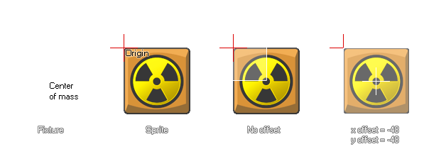

physics_fixture_bind_ext(fixture, target, xoffset, yoffset)
| Argument | Description |
|---|---|
| fixture | the fixture that is to be bound |
| target | the target instance that is to receive the fixture (can be an instance id, an object id, other, or all) |
| xoffset | the offset along the x-axis |
| yoffset | the offset along the y-axis |
Returns: Real
Once we have defined our fixture it has to be bound to an instance. This means that its properties are transferred to the selected instance, not the actual fixture itself, so that one fixture can
be bound to multiple instances if all are to have the same properties. You can specify an object index for the target and all instances present in the room at the time will receive that fixtures properties (but not
any new instances of the object created later), or you can use the special keywords other and all. You can even specify a parent object and all children instances with that parent will also receive
the fixture. Once the fixture has been bound to all the instances that you need, it can be deleted if no longer necessary and the instances with that fixtures properties will not be affected and maintain those
properties.
Normally, the fixture will be bound to the instance with the center of mass being positioned at the origin of the instance, however this is not always what you require and so this function also permits you to offset
the x and y position where the fixture is bound by a given amount (if you do not require this then use physics_fixture_bind instead). It is important to note that a
fixture can only support a single offset, as adding multiple offsets to a single fixture is not supported by Box2D.

The function will also return a unique "id" value for the bound fixture (not the fixture itself) which can then be used to remove ("un-bind") the physics properties from the instance using the function
physics_remove_fixture. This permits you to add and remove physical properties from an instance without destroying and re-creating objects.
Note: Fixtures should be deleted when no longer needed as failure to do so may cause a memory leak which will slow down and eventually crash your game.
var fix, inst;
fix = physics_fixture_create();
physics_fixture_set_circle_shape(fix, 16);
physics_fixture_set_density(fix, 1.0);
inst = instance_create(x, y, genericBodyObject);
my_fix = physics_fixture_bind_ext(fix, inst, sprite_width / 2, -(sprite_height / 2));
physics_fixture_delete(fix);
The code above will create a fixture and assign its index to the variable "fix". It then defines the shape and density of the fixture before binding it to the instance at an offset based on the width and height of the sprite. The index for the bound fixture is stored in the variable "my_fix". Finally, the fixture itself is deleted to prevent memory leaks as it is no longer needed.